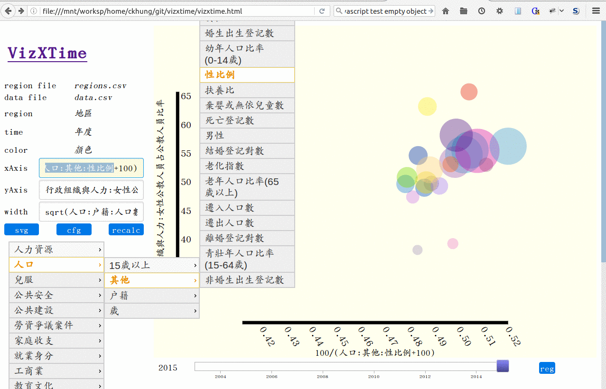
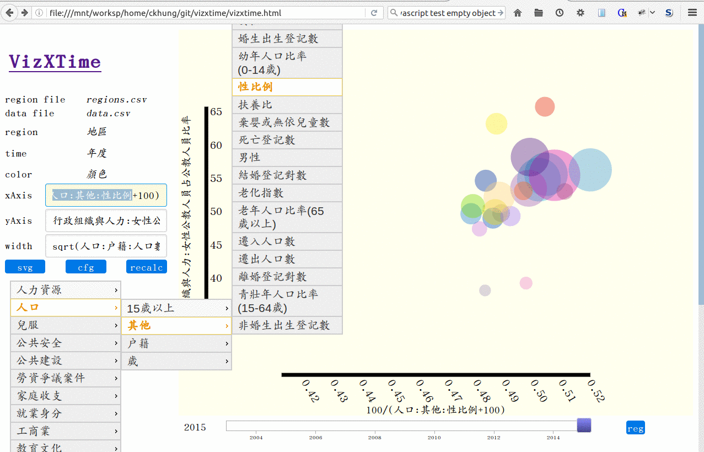

vizxtime
Viz 'cross Time lets you visualize data with a time field by "scrolling/dragging" across the time dimension. See demo.
Viz 'cross Time lets you visualize data with a time field by "scrolling/dragging" across the time dimension. See demo.
